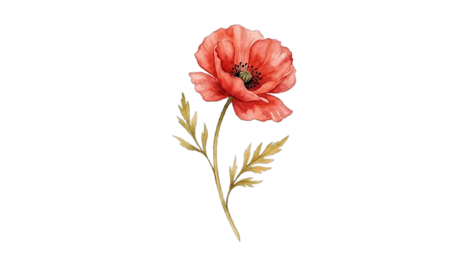
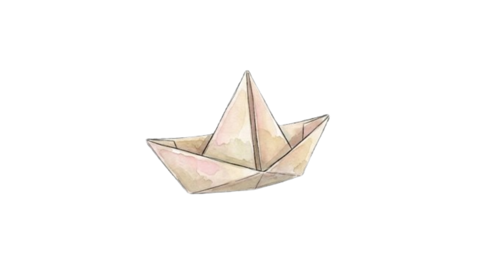

I wore your body like a borrowed coat,
walked through fields you must have loved before.
The grass remembered something in my step,
as if the earth had felt you here before.
I touched the rain the way you touched the rain.
Same drops. Same sky. But not the same hands.
Somewhere you're standing in my morning light,
learning the weight of a name you don't understand.
touch the hands

The flowers don't know which of us to face.
The river carries both our reflections downstream.
I leave you notes inside the folded leaves,
you'll find them in a season I'll never see.
By the time you read the sky I've read,
the stars will have shifted just enough.
We share a world but not a moment in it,
and love, it seems, was never quite enough.
catch a shooting star